Kit de montage
Assemblage de sa propre boîte à histoires
1 Composants
Avant de commencer, veuillez contrôler que vous disposez bien de tous les composants de votre boîte à histoires Contelia.
- Éléments imprimés
- Grande boîte principale (1×)
- Couvercle de la boîte principale (1×)
- Boîte à encaster (1×)
- Couvercle supérieur de la boîte à encaster (1×)
- Couvercle inférieur de la boîte à encaster (1×)
- Attache en forme de 8 (1×)
- Entretoises (4×)
- Boutons circulaires (2×)
- Bouton d’alimentation (1×)
- Vitre en plastique (1×)
- Vis nylon (4×)
- Carte Raspberry Pi Zero 2 WH (1×)
- Carte Adafruit 1.3” TFT Bonnet avec son stick en caoutchouc (1×)
- Carte PiSugar 3 avec batterie (1×)
- Haut-parleur USB (1×)
- Câble adaptateur micro-USB / USB (1×)
- Carte micro-SD de 64 GB avec son adaptateur SD (1×)
2 Préparation
Avant de commencer le montage à proprement parler, il faut déployer le système d’exploitation Contelia sur la carte micro-SD. Pour se faire, déballez la carte et son adaptateur, et en fonction des moyens que vous avez à votre disposition, introduisez la carte micro-SD dans son adaptateur puis l’adaptateur dans votre ordinateur, ou utilisez directement un lecteur de carte micro-SD.
Selon votre système d’exploitation, différentes techniques s’offrent à vous pour déployer l’image sur votre carte micro-SD.
2.1 A. balenaEtcher
Le logiciel balenaEtcher est un outil graphique très connu permettant de facilement déployer une image de ce type depuis chaque plateforme (Linux, macOS et Windows). À vous de voir si vous souhaitez faire confiance à cet éditeur de logiciel, tout comme vous me faites confiance pour Contelia OS. Il n’est pas nécessaire ici que je vous explique comment utiliser ce logiciel, vous devriez assez vite vous en sortir. Un avantage de l’utiliser par rapport à une ligne de commande, c’est qu’il y a moins de risques de faire une bêtise en écrivant l’image sur le mauvais périphérique.
2.2 B. Ligne de commande
Si votre système d’exploitation est Linux ou macOS, je ne recommande pas l’utilisation de balenaEtcher car c’est comme utiliser un canon pour écraser une mouche. Le déploiement de Contelia OS est très simple et ne nécessite aucune subtilité. Vous pouvez utiliser (en root comme les vrais) la commande dd pour faire ce travail.
Linux
Sous Linux, identifiez l’adresse de votre carte micro-SD avec la commande dmesg.
dmesg | grep sdQui par exemple, pourrait vous retourner ceci :
[35574.947414] sd 6:0:0:0: [sde] 249737216 512-byte logical blocks: (128 GB/119 GiB)
[35574.949519] sde: detected capacity change from 0 to 249737216
[35574.981583] sde: sde1 sde2Ce qui nous indique que la carte est accessible en /dev/sde. Faites très attention avec dd. Ne vous mélangez pas les pinceaux avec le if= et surtout le of=. Vous allez avoir besoin des droits root et il serait dommage de détruire un de vos périphériques. Rappelez-vous que if signifie Input File, et of signifie Output File.
# Veuillez remplacer ici le sdX par le numéro qui correspond à votre carte
dd if=~/carnotzet-os-X.Y.Z-rpi4b.img of=/dev/sdX bs=1M status=progressmacOS
La bonne nouvelle c’est que sous macOS c’est presque la même chose. Comme avec Linux, faites attention avec les if= et of=.
diskutil list
# Démontez la carte micro-SD (remplacer diskX par le bon identifiant), puis flashez
diskutil unmountDisk /dev/diskX
sudo dd if=~/carnotzet-os-X.Y.Z-rpi4b.img of=/dev/diskX bs=1m status=progress2.3 Ejection
Comme avec tous périphériques qui se respectent, veuillez éjecter proprement la carte micro-SD de votre ordinateur. Il faut être sûr que les données sont correctement écrites. Dans le cas contraire, une fois que votre boîte à histoire Contelia sera montée, il risquerait de ne rien s’afficher mais nous y reviendrons plus loin.
3 Montage
A partir d’ici, les manipulations vont devoir se faire avec soin et si possible sans électricité statique. Si vous ne disposez pas de bracelet anti-statique, assurez-vous de ne pas porter de vêtements qui favorisent l’électricité statique tel qu’un pull-over, une jacket ou un vêtement en cuir.
Dans tous les cas, essayez de manipuler les cartes électroniques en touchant le moins possible les contacts et les composants.
3.1 Préparation de la carte Raspberry Pi
Avant tout, insérez la carte micro-SD dans le Raspberry Pi.
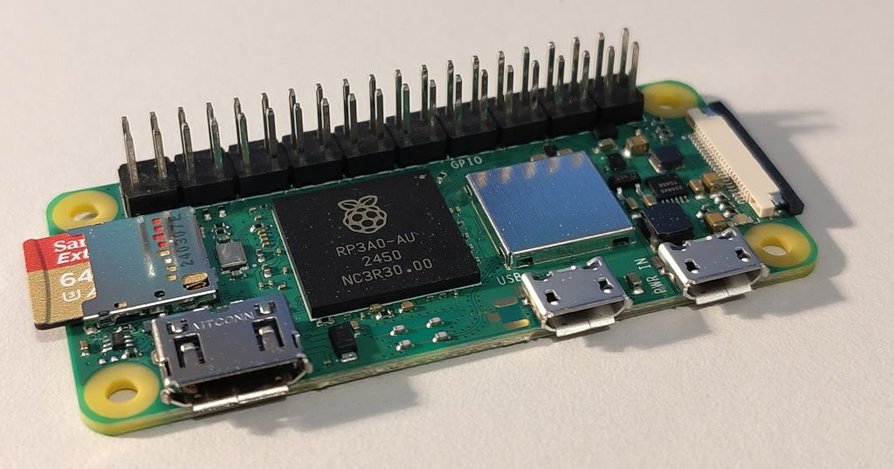
Je vous invite alors à retourner le Raspberry Pi et à inspecter les contacts tout en haut à droite.
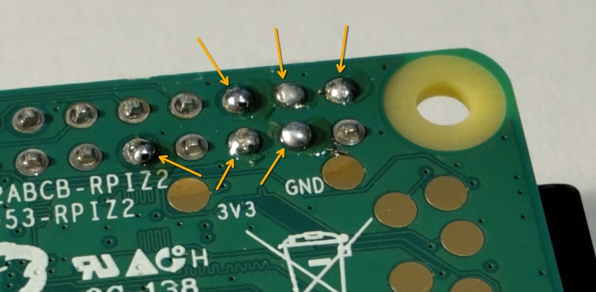
Vous devriez constater que 6 contacts sont légèrement différents où des soudures ont été refaites. En effet, ces 6 contacts vont être appuyés contre la carte d’alimentation PiSugar qui utilise des bogo-PINs (ce sont des PINs montés sur ressort et qui vont s’appuyer sur les contacts du Raspberry Pi). Si vous ne constatez pas de différences entre ces contacts et les autres, il est possible que les connexions avec la carte d’alimentation ne se fassent pas correctement.
3.2 Préparation de la carte PiSugar 3
La carte PiSugar 3 est directement attachée à sa batterie au lithium. Un aimant permet de maintenir en place la batterie. Si vous déconnectez l’aimant, faites attention de ne pas toucher des contacts de la carte avec la surface circulaire en acier. Le cas échéant, il pourrait se produire un court-circuit destructeur.
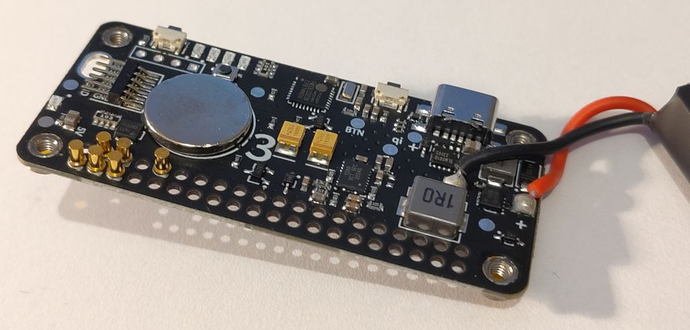
Posez la carte de telle manière que la batterie se situe en dessous. Vous devriez constater que les 4 trous filetés ont un autocollant semi-transparent orange collé dessus.
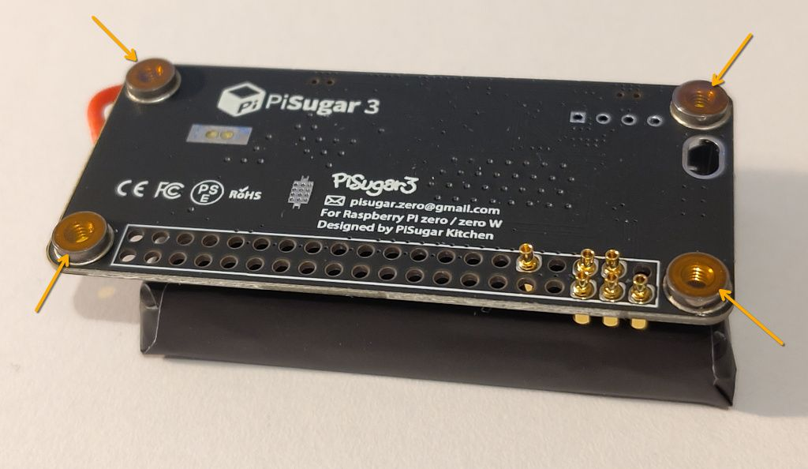
Vous devez enlever ces 4 autocollants sinon il ne sera pas possible de visser les cartes entre elles le temps venu. Pour y parvenir, utilisez (par exemple) la lame d’un cutter afin de soulever délicatement chaque autocollant.
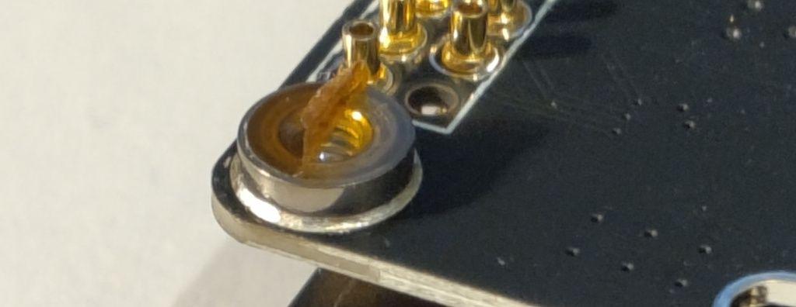
3.3 Assemblage des cartes Raspberry Pi et Adafruit
Pour commencer, l’assemblage des cartes ne concernera que la carte Raspberry Pi et la carte Adafruit 1.3” TFT Bonnet. N’enlevez pas encore la protection sur l’écran de la carte Adafruit et laissez le stick de côté pour le moment.
Connectez délicatement la carte Adafruit avec la carte Raspberry Pi. Pour se faire, introduisez doucement le connecteur en veillant à ne pas appuyer avec vos doigts sur l’écran. Il serait dommage de l’abîmer avec cette manipulation. Utilisez les zones libres du PCB comme appuis et prenez votre temps.
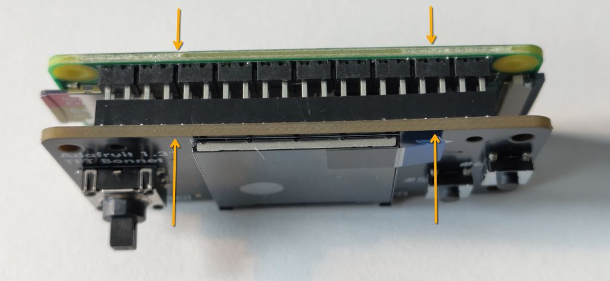
Une fois connectés, posez les deux cartes à plat et introduisez les entretoises entre elles puis faites glisser une vis nylon à l’intérieur afin de maintenir les entretoises en place.
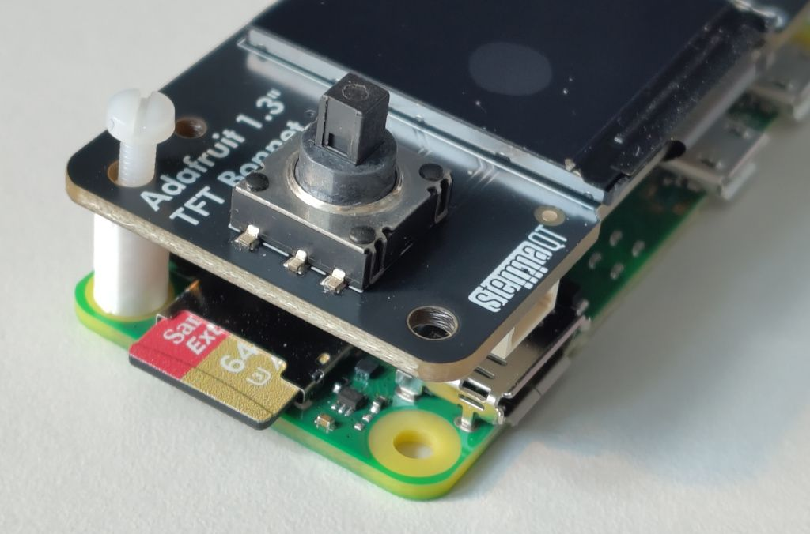
Répétez cette manipulation avec les 4 coins.
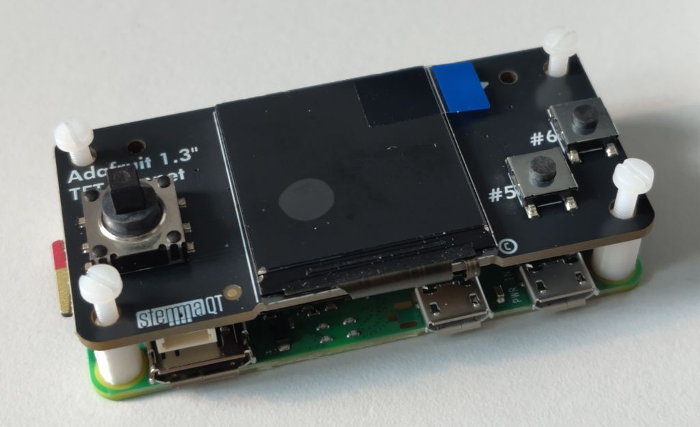
Vous pouvez dès à présent laisser de côté ce montage car nous allons maintenant nous intéresser à la carte PiSugar 3.
3.4 Assemblage temporaire et premier démarrage
Avant de se lancer plus loin dans le montage, il est judicieux d’effectuer le tout premier démarrage de Contelia pour s’assurer que tout fonctionne comme prévu. Si cette étape échoue, il est inutile d’aller plus loin.
Ici, évitez de toucher au bouton d’alimentation de la PiSugar. Bien qu’il y a par défaut un système de protection pour éviter d’allumer la carte par mégarde, il vaut mieux éviter ce bouton tant que toutes les cartes ne sont pas correctement vissées entre elles.
Positionnez la carte Raspberry Pi par dessus la carte PiSugar, tout en alignant les vis. Les connecteurs de la carte PiSugar doivent s’appuyer proprement contre les contacts de la carte Raspberry Pi.
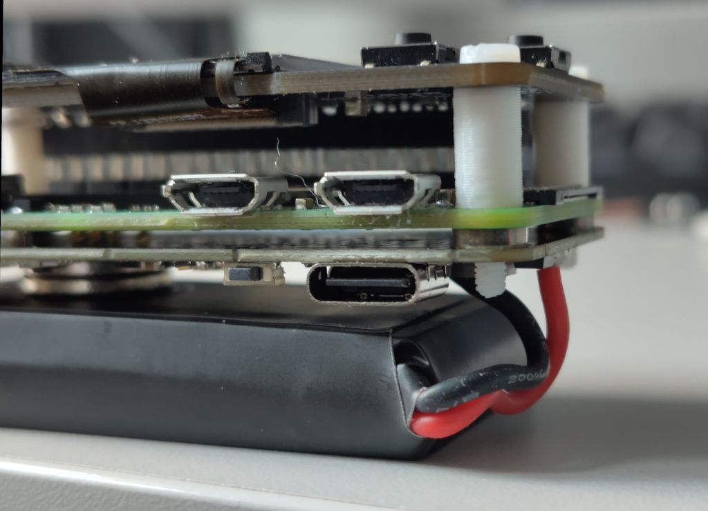
Serrez les vis en croix et assez fermement (mais pas trop non plus, il ne faut pas abîmer les pas de vis).
Pour ce premier démarrage, je vous invite à brancher un câble d’alimentation USB-C sur la carte PiSugar. Bien que la batterie devrait être suffisamment chargée, il est plus sage de s’assurer que la tension électrique ne chute pas pendant les étapes “critiques” de la première initialisation du Contelia OS.
A EXPERIMENTER, MESURE LE TEMPS ET EXPLIQUER
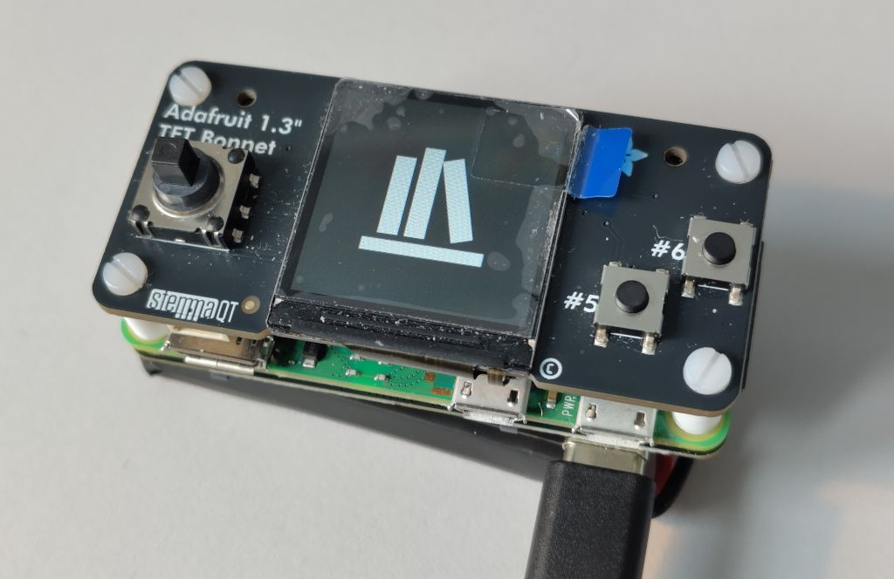
Attendez un instant, Contelia OS va s’éteindre de lui même puis débranchez le câble USB-C et dévissez toutes les vis. Pour la suite, il est nécessaire de monter la PiSugar séparément des deux autres cartes.
3.5 Assemblage de la carte PiSugar 3
Avant tout, prenez la petite boîte et le bouton d’alimentation (en forme rectangulaire). Introduisez le bouton dans la boîte depuis l’intérieur. Ce bouton ne peut pas tenir en place tant que la carte PiSugar n’est pas installée. Si vous souhaitez vous simplifier la vie, utilisez un morceau de papier collant à l’extérieur afin de garder le bouton en place.
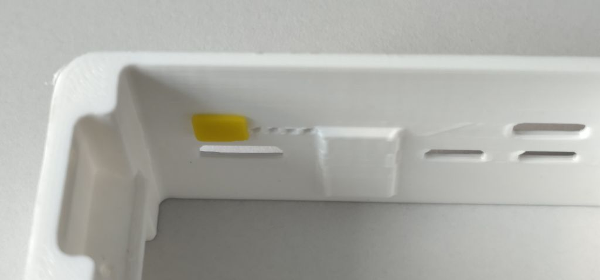
Regardez bien le sens de votre boîte, car vous devez insérer la carte PiSugar à l’intérieur et depuis le bon côté. La carte PiSugar a uniquement un connecteur USB-C et c’est elle qui a le bouton d’alimentation. Par rapport à la photo ci-dessus, la carte PiSugar doit alors être insérée par le haut (car nous tenons la boîte à l’envers).
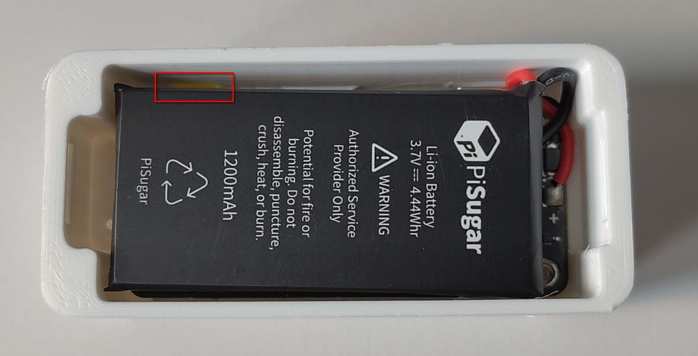
Vous devez glisser délicatement la carte PiSugar tout en faisant attention à ce que le bouton d’alimentation se situe bien devant le bouton que vous avez positionné précédemment avec du papier collant. Une fois fait, ne retournez pas la boîte.
Saisissez la boîte en gardant appuyé avec un doigt, la carte PiSugar.
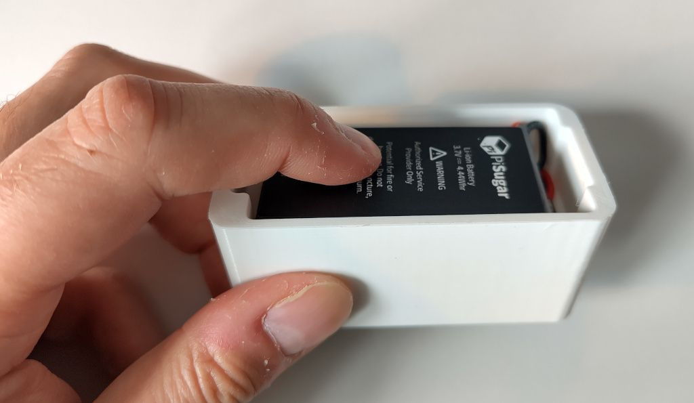
Alors vous pouvez retourner l’assemblage pour y introduire de l’autre côté, la paire de cartes Raspberry Pi et Adafruit que vous avez préparée tout à l’heure. Tout en gardant bien en place la carte PiSugar, introduisez les autres cartes. Vous pouvez écarter légèrement les parois latérales de la boîte pour faciliter leur introduction.
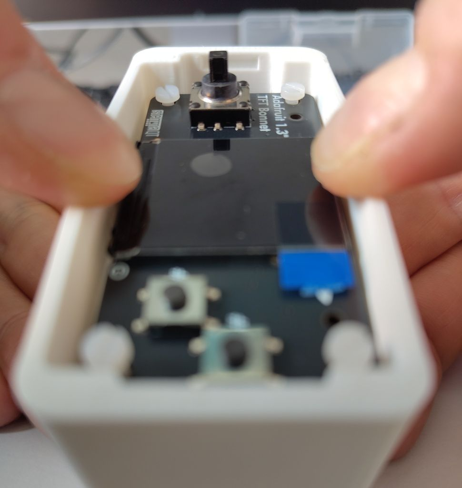
Faites en sorte d’introduire les cartes en les gardant à plat autant que possible afin que les contacts entre la carte PiSugar et la carte Raspberry Pi se fassent sans encombre. Une fois que vous avez bien introduit toutes les cartes, les connecteurs de la carte Raspberry Pi (ainsi que le connecteur USB-C de la PiSugar) devraient être alignés avec les trous du boîtier.
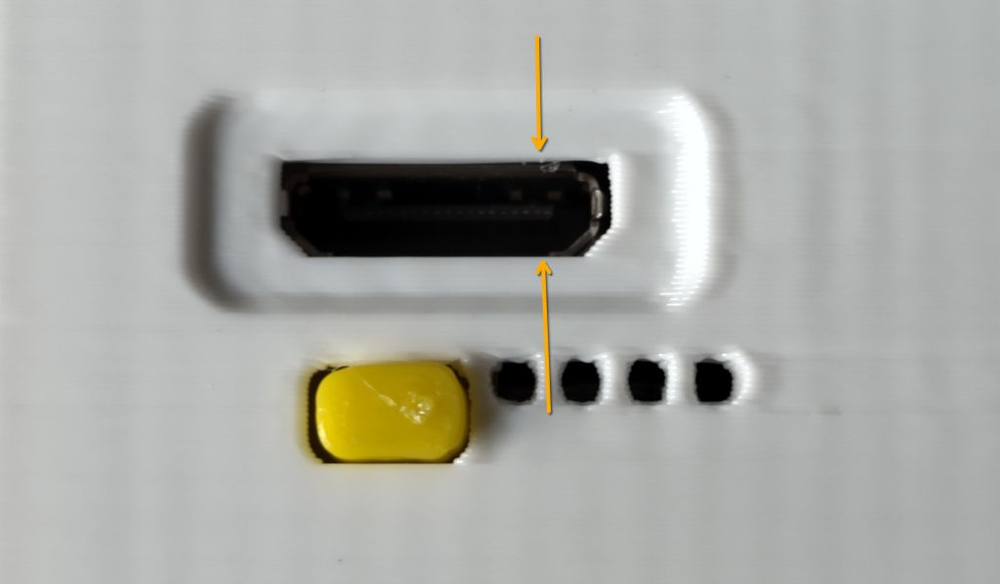
Tout en gardant bien en place avec une main, le trio de cartes (je vous rappelle d’éviter autant que possible de presser sur l’écran de la carte Adafruit), commencez par visser (en croix) les vis nylons. Vissez bien en croix et gentiment afin que les cartes restent toujours bien plaquées. Ne serrez pas comme un sourd car vous risqueriez d’abîmer le filetage des vis. Mais serrez fermement car il faut garantir les appuis avec les contacts de la carte Raspberry Pi.
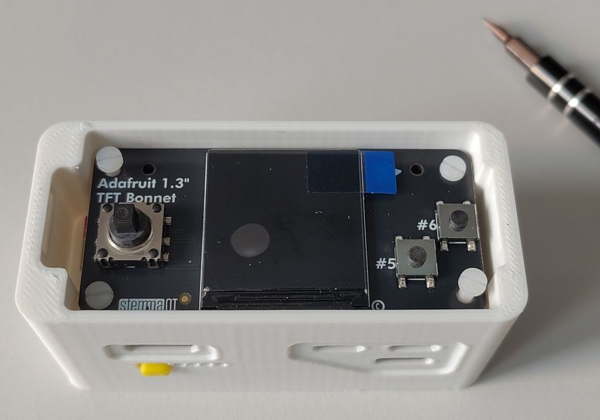
3.6 Fermeture de la boîte à encaster
Couvercle inférieur
Vous avez deux couvercles à disposition. Le couvercle plein sert évidemment à fermer l’ouverture sur la batterie.
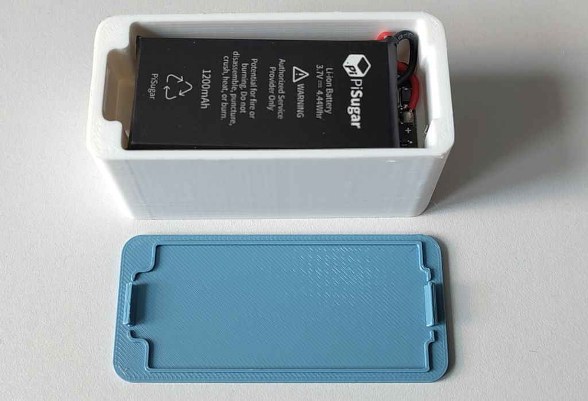
Faites tenir le couvercle au moins d’un côté court et maintenez comme sur la photo avec une seule main. Utilisez votre seconde main pour courber (avec un peu de force) légèrement le couvercle afin de faire rentrer le second clip.
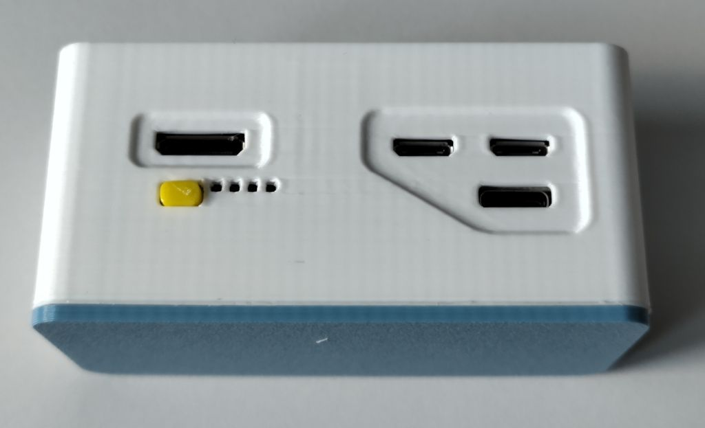
Couvercle supérieur
Avant tout, vous devez introduire la vitre en plastique transparent dans les fentes du couvercle. Cette vitre est destinée à protéger l’écran des rayures.
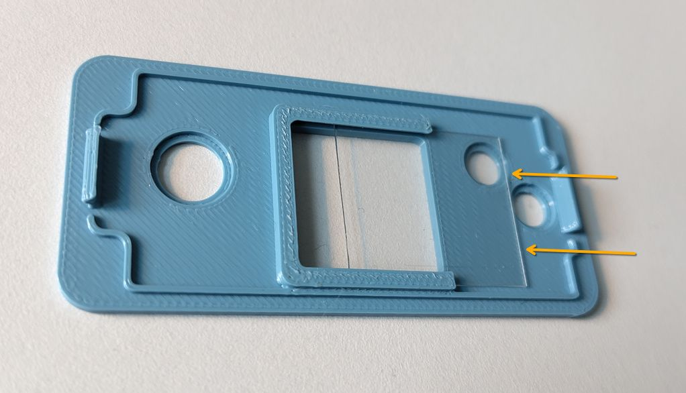
Poussez la vitre autant que possible. Elle ne doit pas obstruer un bouton et elle doit complètement recouvrir le trou destiné à l’écran. Il est possible que votre vitre ne soit pas exactement de la même dimension que sur la photo ci-dessous.
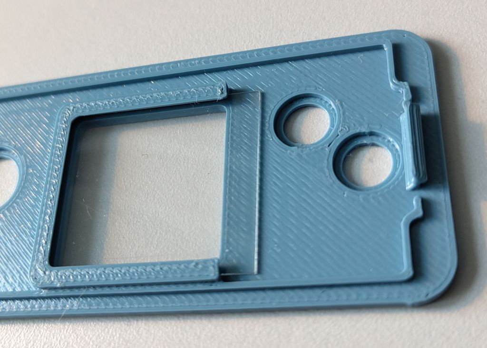
Maintenant il faut préparer la carte Adafruit avant de refermer la boîte. Commencez par enfoncer le stick en caoutchouc. N’ayez pas peur de presser fermement sur le stick car il peut y avoir une certaine résistance.
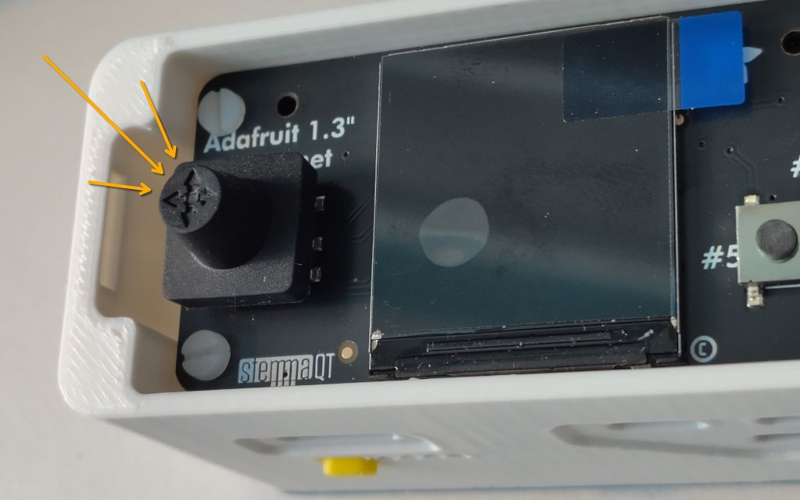
Une fois le stick en place, enlevez délicatement le film protecteur de l’écran.
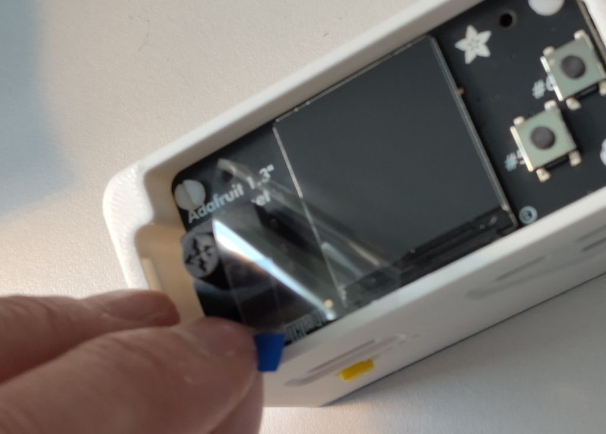
Déposez alors les deux boutons poussoir comme indiqué sur la photo. Si vous n’y arrivez pas car c’est un jeu d’équilibrisme, vous pouvez procéder comme avec le bouton d’alimentation en utilisant du papier collant en faisant tenir les boutons directement sur le couvercle.
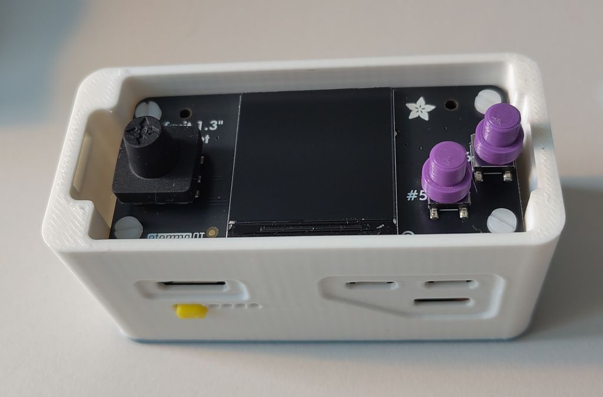
Fixez le couvercle supérieur de la même manière que pour le couvercle inférieur.
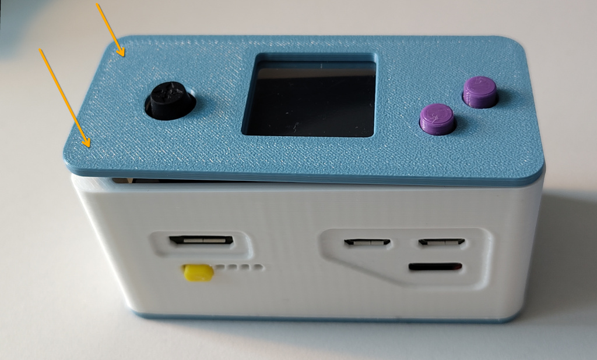
Votre petite boîte à histoire est prête.
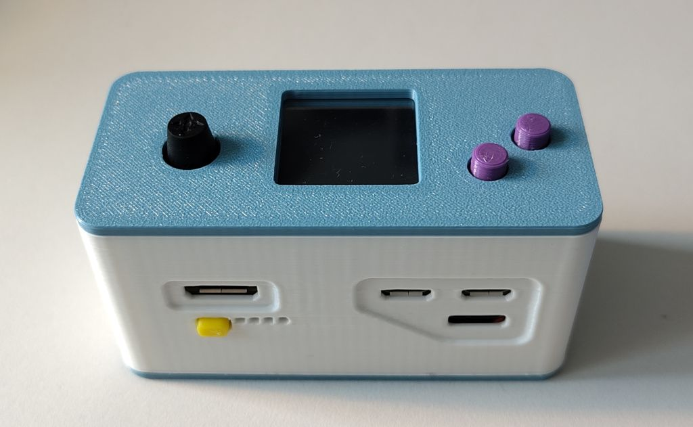
3.7 Mise en place de la boîte principale
Tout d’abord, vous devez vous occuper du haut-parleur. Celui-ci utilise un connecteur USB et il est donc tout à fait possible d’utiliser Contelia sans la boîte principale. C’est votre boîte à histoire, vous en faites ce que vous voulez. Vous pouvez imaginer utiliser uniquement des écouteurs USB, il est également possible d’exploiter des enceintes (ou des écouteurs) bluetooth mais nous y reviendrons dans la documentation utilisateur.
Vous devez enrouler proprement le câble USB du haut-parleur dans la bride en forme de huit. Prenez votre temps, enroulez serré.
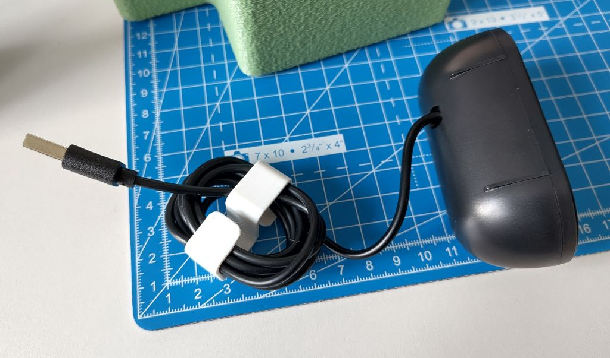
Prenez alors la boîte principale, la petite boîte ainsi que le haut-parleur. Commencez par déposer la petite boîte en veillant bien à ce qu’elle soit parfaitement encastrée. Le plat du couvercle de la petite boîte ne doit en aucun cas dépasser la hauteur des parois de la grande boîte. Si c’est le cas, alors certainement que vous n’avez pas bien positionné la petite boîte.
Une fois fait, encastrez le haut-parleur dans son emplacement réservé en veillant à ce que son câble sorte vers le bas et non vers le haut. Disposez le câble comme proposé sur la photo.
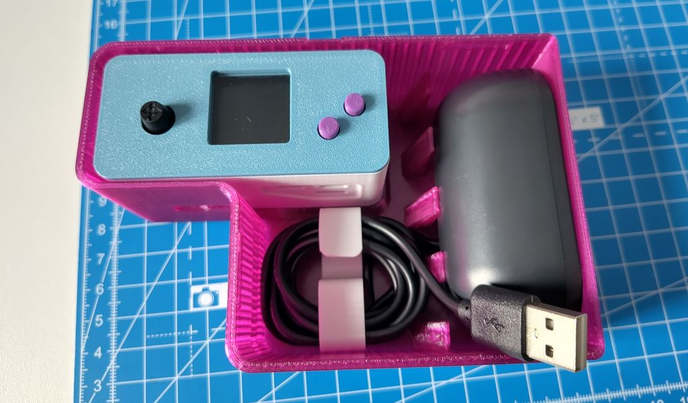
Il ne vous reste alors plus qu’un câble, c’est l’adaptateur USB / micro-USB. Je vous invite à enrouler le câble de l’adaptateur et d’utiliser les brides noires pour faire tenir la boucle. Observez bien la photo suivante. Connectez le micro-USB de l’adaptateur sur l’entrée gauche de la petite boîte à histoire. L’entrée micro-USB droite supérieure n’est jamais utilisée. Mettez alors bien en place le câble de l’adaptateur afin de pouvoir le connecter avec le câble USB du haut-parleur sans que ça puisse empêcher de fermer le couvercle de la grande boîte à histoire.
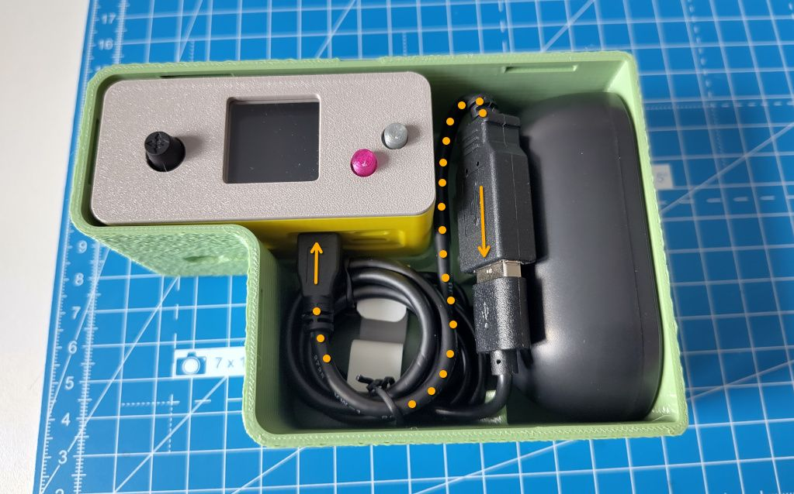
Si la batterie est complètement chargée, alors vous pouvez mettre le couvercle en place. Commencez par en haut à gauche et terminez de clipper en bas à droite.
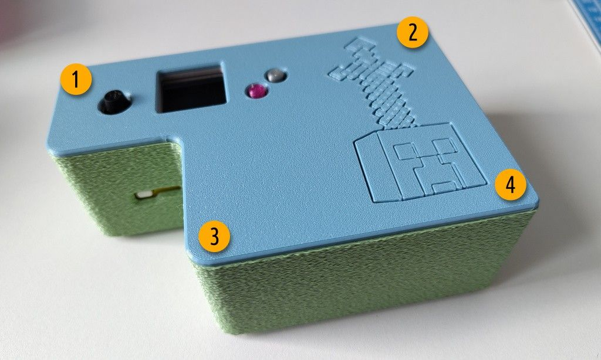